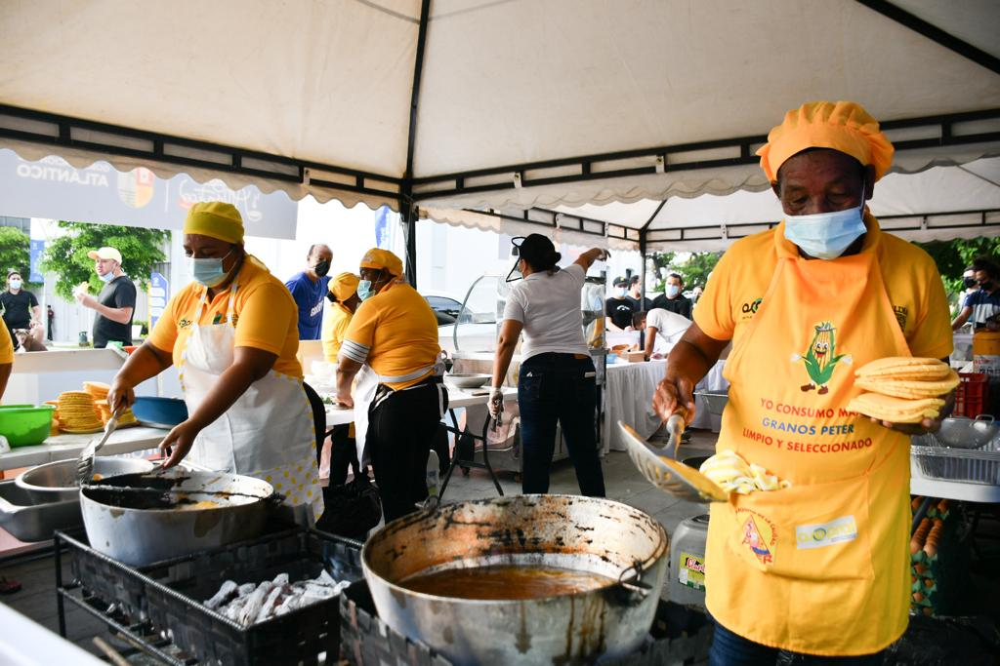
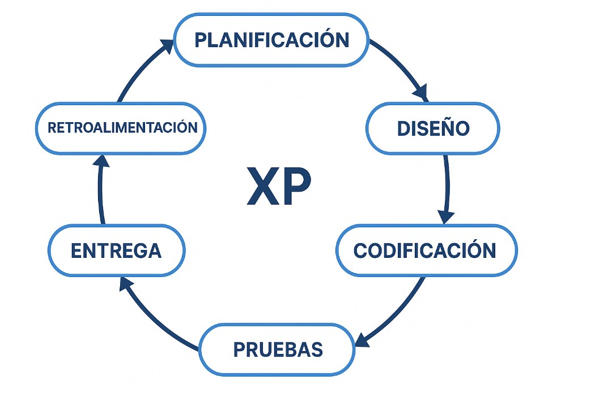
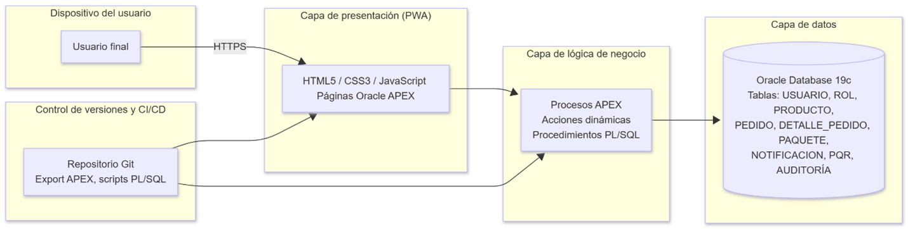
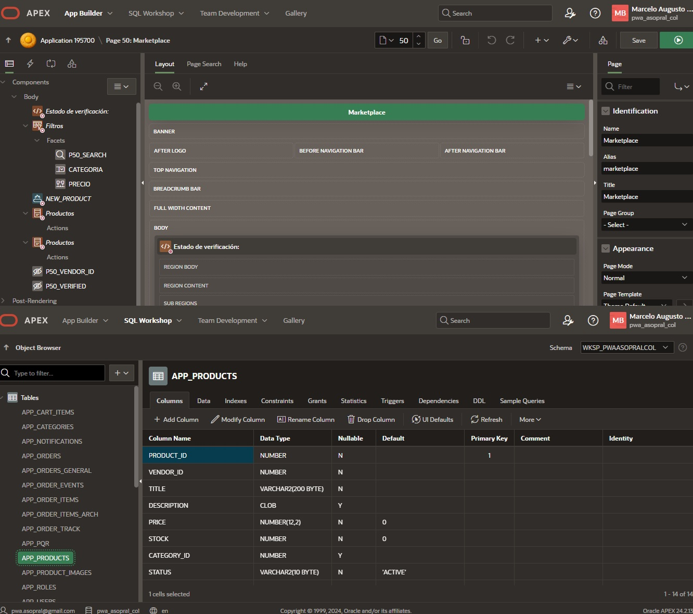
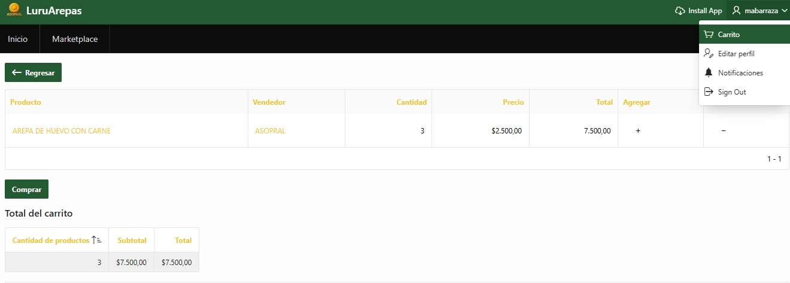
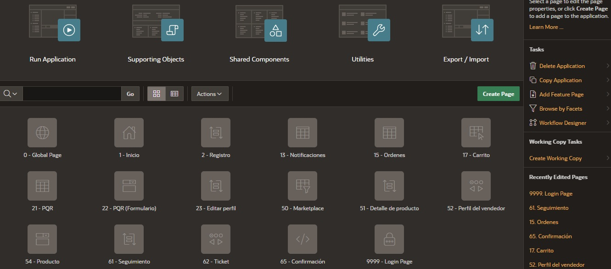
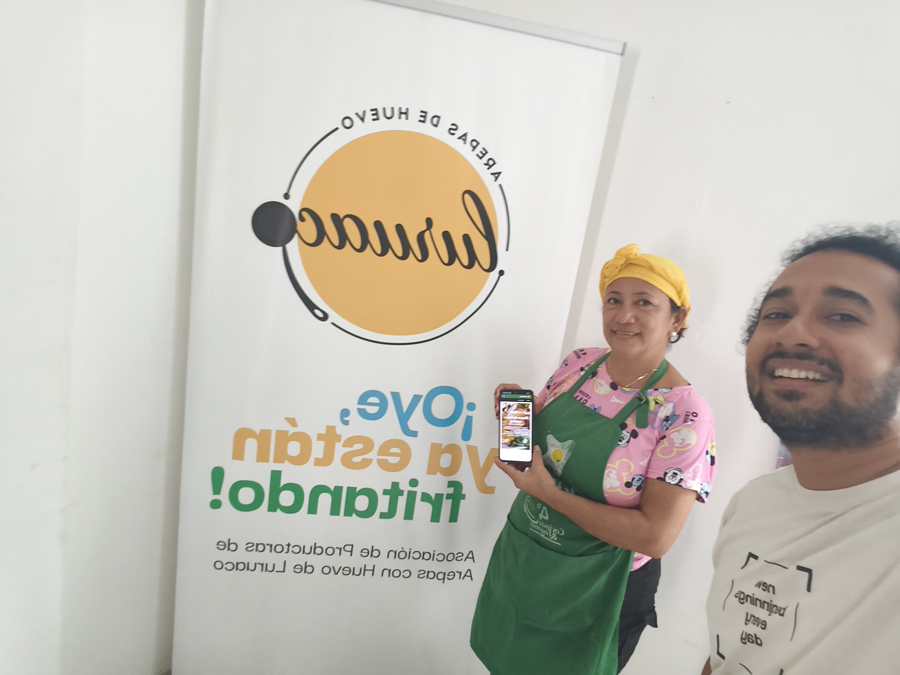

LuruArepa: PWA en Oracle APEX
Para la comercialización de productos tradicionales de ASOPRAL en Luruaco, Atlántico.
II Encuentro de Grupos y Semilleros ECBTI
En el marco de la V Jornada Internacional de Ingeniería Aplicada 2026
Universidad Nacional Abierta y a Distancia — UNAD
Contexto y planteamiento del problema
📍 Contexto Territorial y Comunitario
Luruaco (Atlántico): Municipio cuna de la arepa de huevo, manifestación representativa del patrimonio cultural y gastronómico del Caribe Colombiano.
Comunidad Afectada: La Asociación de Productoras de Arepas de Huevo (ASOPRAL), conformada por matronas tradicionales de la economía popular que dependen de este oficio artesanal.
🛑 Problema de Investigación
El proceso de comercialización de ASOPRAL opera bajo un esquema 100% manual e informal (libretas de papel y chats personales de WhatsApp).
- Desorden y cruce de pedidos: En fines de semana y festivales, los pedidos se pierden o confunden en el chat en medio de la fritura de arepas.
- Cero trazabilidad de datos: Ausencia total de histórico de clientes, costos e inventario de materias primas.
- Sobrecarga operativa: Estrés laboral para las matronas y límite estricto para expandirse a mercados de Barranquilla y Cartagena.

Pregunta de investigación y objetivos
¿De qué manera el diseño e implementación de una Progressive Web Application (PWA) desarrollada en Oracle APEX permite optimizar la comercialización y control de pedidos de los productos de ASOPRAL en Luruaco, Atlántico?
🎯 Objetivo General
Implementar una Progressive Web Application (PWA) en Oracle APEX para optimizar la gestión comercial y el control de pedidos de los productos de ASOPRAL, promoviendo la inclusión digital y la preservación de la gastronomía autóctona.
1. Analizar
Identificar y documentar los requerimientos funcionales y técnicos del proceso actual de venta de arepas y derivados en ASOPRAL.
2. Desarrollar
Construir la PWA en Oracle APEX integrando catálogo digital, carrito de compras y panel de administración por roles.
3. Desplegar y Validar
Poner en marcha la plataforma en la nube y validar su usabilidad y nivel de aceptación con la líder y socias de ASOPRAL.
Referentes teóricos y estado del arte
📱 Conceptos Clave
PWA (Progressive Web App): Combina la universalidad de la web con capacidades nativas móviles (Service Workers, bajo consumo, acceso instantáneo por URL/QR sin pasar por tiendas) (Pressman & Maxim, 2020).
Oracle APEX (Low-Code): Plataforma ágil de alta productividad construida sobre base de datos relacional Oracle Autonomous Database, con seguridad nativa y arquitectura robusta (Oracle, 2023).
🏛 Antecedentes
Inclusión Digital Rural: Estudios de innovación social demuestran que las microempresas agroalimentarias aumentan un 35% su competitividad al incorporar canales de pedido ordenados (Leal Afanador, 2021).
Comercio Gastronómico Tradicional: La virtualidad bien orientada dignifica el trabajo de matronas y artesanas al otorgarles autonomía comercial.
💡 Vacío que aborda el trabajo
Barrera de Adopción Rural: La mayoría de apps de delivery exigen comisiones abusivas (20-30%) y teléfonos de gama alta que excluyen a las productoras rurales.
Aporte Novedoso: Una PWA ligera, autogestionada por la asociación y con cero costo de infraestructura bajo Oracle Cloud Always Free.
Metodología de Desarrollo: Extreme Programming (XP)
Investigación aplicada y desarrollo tecnológico con enfoque mixto (cualitativo y cuantitativo).
Comunidad ASOPRAL en Luruaco: muestra censal de 10 productoras activas y su representante legal.
- Fase 1: Diagnóstico: Instrumentos Microsoft Forms, matriz DOFA, levantamiento de Historias de Usuario (HU).
- Fase 2: Construcción Ágil: Iteraciones cortas de codificación en Oracle APEX, scripts PL/SQL, diseño responsivo PWA.
- Fase 3: Validación y Entrega: Despliegue en la nube, pruebas de usabilidad presenciales y firma del acta de entrega.


Resultados: La Solución PWA LuruArepa

1. Catálogo Digital
Hallazgo 1: Vitrina interactiva con fotos reales y precios transparentes de arepas de huevo, con carne, masas (amarilla y blanca) y combos para fiestas.
✓ Elimina dudas sobre precios y productos
2. Carrito y Pedidos
Hallazgo 2: Proceso de orden fluido en 3 pasos con cálculo automático de totales y confirmación unívoca por pedido.
✓ Acaba con los mensajes perdidos de WhatsApp
3. Control de Estados
Hallazgo 3: Semáforo operativo en vivo: Recibido ➔ En preparación ➔ Enviado ➔ Entregado, controlado con un solo toque.
✓ Trazabilidad completa en cocinaAnálisis y discusión: Validación con ASOPRAL
📊 Validación Cuantitativa de Usabilidad
Prueba formal realizada en Luruaco (7 de nov 2025) con Mileidys García (Líder ASOPRAL) y socias:
🗣 Voz de la Comunidad
"La aplicación nos quita el enredo de los pedidos perdidos en el WhatsApp y nos da seriedad ante clientes que quieren arepas para fiestas o eventos."
— Mileidys García, Representante Legal ASOPRAL
Discusión y Limitaciones Detectadas
Respuesta a la pregunta: Se comprobó que la PWA redujo a cero los pedidos duplicados o desatendidos.
Limitación operativa: En el ambiente ruidoso de las pailas y cocinas, se requiere agregar una alerta sonora intensa o vibración continua al recibir pedidos.
Conclusiones del Proyecto
Respecto al Objetivo 1 (Analizar)
El diagnóstico participativo con las 10 productoras de ASOPRAL permitió traducir necesidades de una economía informal en historias de usuario precisas, identificando que la simplicidad visual era más importante que funcionalidades complejas.
Respecto al Objetivo 2 (Desarrollar)
La arquitectura PWA en Oracle APEX demostró ser la alternativa óptima para el sector rural: cero costo de licencias, desarrollo ágil y despliegue inmediato sin obligar a las usuarias a liberar espacio en sus teléfonos móviles.
Respecto al Objetivo 3 (Validar)
La validación en sitio y el Acta formal de Entrega y Aceptación suscrita con ASOPRAL confirman que la aplicación es viable, elimina el caos operativo en la recepción de pedidos y sienta una base real de inclusión digital campesina.
Impacto, ODS y Proyección Futura
🌍 Aporte al Territorio y los ODS
- Territorio Luruaco: Dignificación del oficio tradicional de la arepa de huevo mediante tecnología que reduce el estrés laboral y protege el patrimonio gastronómico.
- Inclusión Económica: Formalización tecnológica de una asociación de mujeres cabeza de hogar sin barreras de entrada.
🚀 Próximos Pasos (Proyección)
- Fase 2 de Pagos Digitales: Integración de pasarelas de pago móvil de bajo costo (Nequi, Daviplata, PSE) para liquidación directa.
- Logística de Cadena de Frío: Despacho refrigerado intermunicipal hacia Barranquilla y Cartagena para masas y arepas pre-fritas.
- Divulgación y Registro: Registro de soporte lógico ante la DNDA y publicación de artículo científico en revista indexada.
Referencias Bibliográficas
• Leal Afanador, J. A. (2021). Educación, innovación y territorio: la apuesta transformadora de la UNAD. Sello Editorial UNAD.
• Oracle Corporation. (2023). Oracle Application Express Documentation: Progressive Web Applications in APEX. Oracle Cloud Infrastructure. https://docs.oracle.com/en/database/oracle/application-express/
• Pressman, R. S., & Maxim, B. R. (2020). Software engineering: a practitioner’s approach (9.ª ed.). McGraw-Hill Education.
• Programa de las Naciones Unidas para el Desarrollo [PNUD]. (2015). Objetivos de Desarrollo Sostenible: Metas y Líneas de Acción 2030. Organización de las Naciones Unidas.
• Sommerville, I. (2016). Software Engineering (10.ª ed.). Pearson Education.
¡Muchas Gracias!
Sesión de Preguntas y Realimentación del Jurado (4 minutos)
Ponente: Marcelo Augusto Barraza Santiago
Correo: mabarrazas@unadvirtual.edu.co
Semillero: SINERGIA • Escuela de Ciencias Básicas, Tecnología e Ingeniería (ECBTI)
Centro: CCAV Puerto Colombia • Universidad Nacional Abierta y a Distancia UNAD
V Jornada Internacional de Ingeniería Aplicada 2026